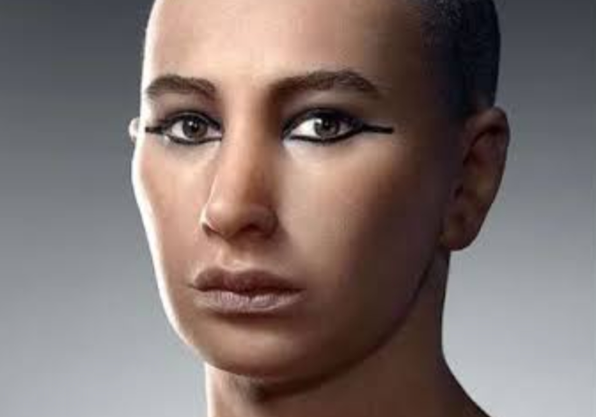
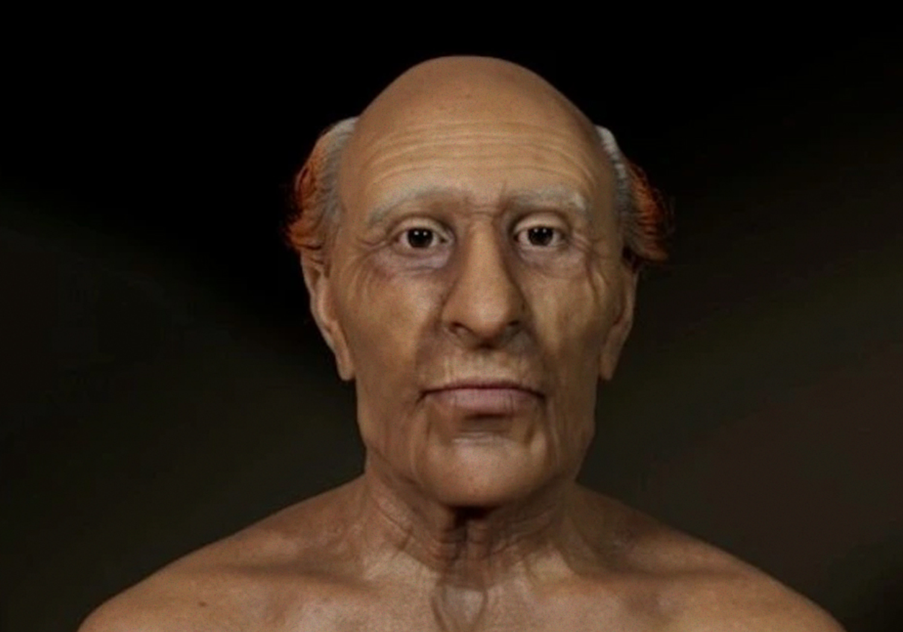
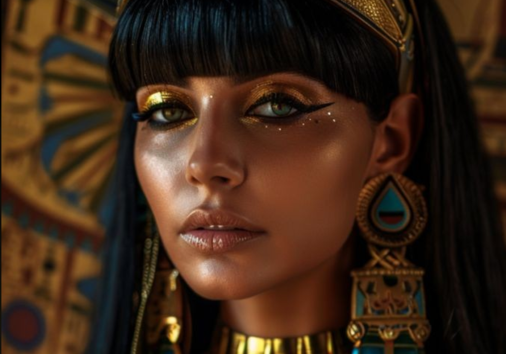
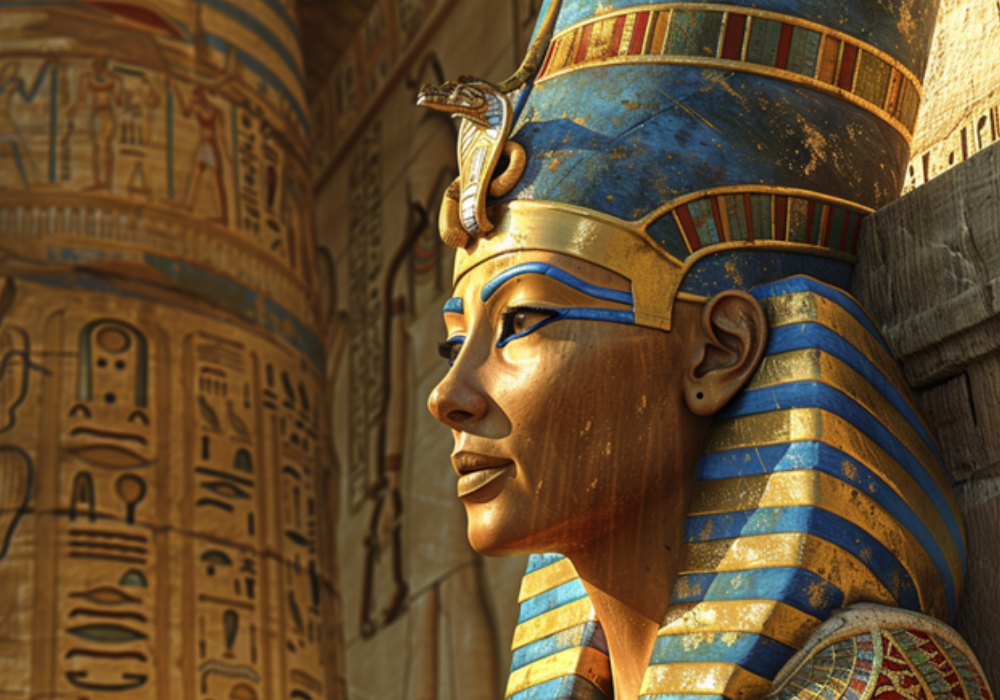

Faraós Notáveis
Os faraós eram os governantes do Antigo Egito, considerados divindades vivas e representantes dos deuses na Terra. Eles desempenhavam um papel central na política, religião e cultura egípcia, sendo vistos como intermediários entre os deuses e o povo. Alguns faraós ficaram notáveis por suas realizações militares, grandes projetos de construção e reformas religiosas. O poder e a influência dos faraós eram simbolizados por monumentos imponentes, como as pirâmides e templos, e suas histórias continuam a fascinar estudiosos e curiosos até hoje.

Tutancâmon

Ramsés II

Cleópatra VII
